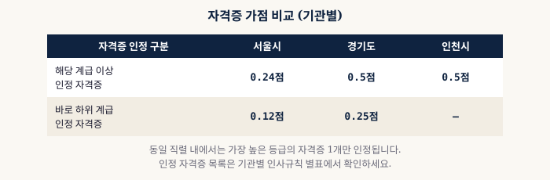
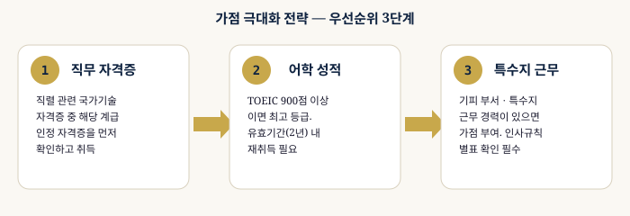

가점, 어떻게 채워야 할까요?
가점은 평정점수에서 최대 5점을 추가로 얻을 수 있는 항목입니다. 근무성적평정·경력평정과 달리 노력으로 직접 높일 수 있는 유일한 영역이기 때문에, 승진을 앞둔 공무원이라면 반드시 챙겨야 합니다.
왜 가점이 중요한가
가점의 종류는 기관마다 다르지만, 대부분 자격증·어학·특수지 근무·실적의 4가지 항목으로 구성됩니다. 근무성적평정은 평정권자의 주관적 판단과 부서 배치 운이 크게 작용하고, 경력평정은 시간이 지나야만 쌓이는 항목이지만, 가점은 본인의 준비와 실행만으로 확보할 수 있다는 점에서 성격이 다릅니다.
특히 근평 경쟁이 치열한 7급 이상 구간에서는 동료들과 근평 등급 차이가 크지 않은 경우가 많습니다. 이런 상황에서 가점 0.1~0.5점의 미세한 차이가 명부 순위를 뒤집는 결정적 변수가 되기도 합니다. 반대로 가점을 전혀 챙기지 않으면, 근평이 비슷한 경쟁자에게 계속 밀리는 상황이 반복될 수 있습니다.
자격증 가점 (서울시 기준)
직무와 관련된 자격증을 보유하면 가점을 받을 수 있습니다. 자격증의 수준(해당 계급 인정 vs 하위 계급 인정)에 따라 점수가 다릅니다.
| 구분 | 서울시 | 경기도 | 인천시 |
|---|---|---|---|
| 해당 계급 이상 인정 자격증 | 0.24점 | 0.5점 | 0.5점 |
| 바로 하위 계급 인정 자격증 | 0.12점 | 0.25점 | — |

어학 가점
공인 외국어 성적 보유자에게 부여되는 가점입니다. 서울시 기준 최대 0.12점이며, 성적 구간별로 점수가 다릅니다.
| 구분 | TOEIC | 가점 |
|---|---|---|
| 1급 | 900점 이상 | 0.12점 |
| 2급 | 800점 이상 ~ 900점 미만 | 0.05점 |
가점 극대화 전략 — 준비 순서
승진을 앞두고 있다면 아래 순서로 가점 항목을 점검해보세요. 준비 기간이 긴 순서대로 배치했습니다.

실전 시뮬레이션 — 0.36점~0.5점이 명부 순위를 뒤집는 원리
가점 0.24점이나 0.5점이 작아 보이지만, 실제 승진후보자명부에서 체감하는 영향력은 훨씬 큽니다. 특히 경력평정이 만점(30점)에 가까워진 7급·6급 승진 대기 구간에서는 동기·선후배 대부분이 경력 29.5~30.0점 사이에 촘촘히 몰려 있고, 근평 역시 '우' 등급이 전체의 40%를 차지해 소수점 첫째·둘째 자리에서 수십 명의 순위가 갈립니다.
예를 들어 서울시 7급 기준 최근 4반기(2년) 근평은 연도별 50%씩 가중평균되므로, 한 반기에서 '수'와 '우'를 한 번 더 받더라도 최종 70점 환산 점수 차이는 0.5점 안팎에 그치는 경우가 많습니다. 반면 경기도·인천시 기준 해당 계급 자격증 가점(0.50점)이나 서울시 자격증(0.24점)+어학 1급(0.12점)=0.36점은 근평 1~2반기 등급 차이를 그대로 상쇄하거나 역전시키는 효과를 냅니다.
현직자가 가점에서 가장 자주 손해 보는 4가지 함정을 미리 점검해 두세요.
| 흔한 실수 | 실제 불이익 | 예방 방법 |
|---|---|---|
| 자격증 중복 취득 착각 | 동일 직렬 자격증을 2~3개 따도 최상위 1개만 인정 | 취득 전 인사규칙 별표에서 직렬·계급 매칭 확인 |
| 어학 성적 만료 방치 | 기준일(6·12월 말) 하루 전 만료되면 해당 반기 0점 | 만료 3개월 전 재응시·인사시스템 등재 확인 |
| 임용 전 취득 자격증 미등록 | 인정 가능한 자격증인데 인사기록카드 누락으로 0점 | 매년 5월·11월 인사기록카드 가점 항목 열람 |
| 격무·특수지 최소 근무기간 미달 | 지정 부서에서 일정 기간(예: 1~2년) 미만 근무 시 미인정 | 전보 희망 전 소속 기관 가산점 부여 기준월 확인 |
자격증·어학 가점을 반영한 내 최종 평정점수가 얼마인지 계산해보세요.
🏆 가점 포함 평정점수 계산하기